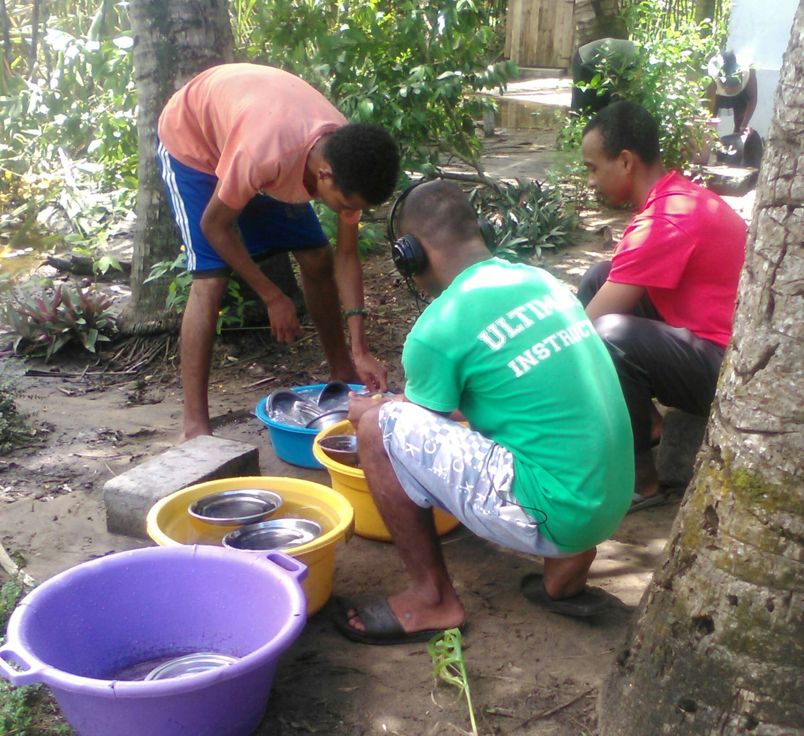

About our activities
we are 20 students at Onja and we divide into 5 groups. we have our own chore per group everyday and our challenge is to make sure that our chore is completed at the end of the day.
Those are the chores which we have to do at onja:
-
Washing up:
We do this chore twice a day after lunch &after dinner, for lunch we do it straightaway after lunch, but for dinner we do it the next day early morning.
-
Sweeping the classroom, kitchen and yard
we have to do this task everyday too as you do. We sweep the classroom once a day in the evening after class, for the kitchen after meal time and once a week for the yard on Friday at 5:00 during Working bee time.
-
Washing pots:
This one depents on how many pots have been used during a day and we have to clean them after lunch & dinner.
-
Sifting rice:
We sift rice once a week and that's all and next week again.
-
Fetching water:
We have to fill 4 drums everyday, 1 for cooking and 3 for washing or cleaning things.
To complete those task we have to work together. That means everyone have to participate with their own chore.
Collaboration:
Working together is the most important things at onja
because we work hard and we still have our chores that have to be done everyday so we need to
collaborate to complete them.
We are keen on helping each other.